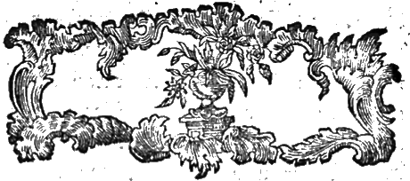
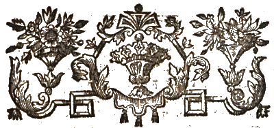
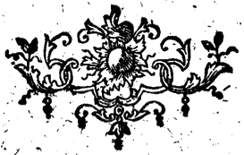

Zusätze
Zu dem
Bedenken ,
Über die Frage:
Wie dem Bauernstande Freiheit
und Eigenthun in den Ländern
wo ihn deydes fehlet, ver
Schaffet werden könne?
Verum fatentibus latifundia perdidere Italian
jam vero & Provincias. Plan.Hift.Nat.XVIII.6.
Die Wahrheit zu sagen, so haben die grossen Landgüter Italien ruiniert,
und schon geht es den
Provinzen eben so. Plin.
loc. cit
Frankfurt und Leipzig.
1771

3)
Der Verfasser des Bedenkens hat diese Zusätze in den Monaten März und April des Jahres 1770 geschrieben, und bittet diejenigen seiner Leser, welchen seine Person und Umstände näher bekannt sind, auch dieses Umstandes sich zu erinnern. Er schrieb sie ohne einen festen Vorsatz, sie im Drucke heraus zu geben, wenigstens ohne die Absicht, sie so bald erscheinen zu lassen, bloß für gute Freunde, in Stunden der Musse, ohne sich in irgend einem Grade ein dringendes Geschäfte aus der Fortsetzung zu mache. Nun, da ihm sein gegenwärtiger Beruf sein Nebengeschäfte erlaubt, muß er vollends den Gedan-
4)
ken fahren lassen, diese Zusätze nach der ganzen Länge des Bedenkens auszuführen. Gleichwohl oder vielmehr eben deswegen wollen seine Freunde, daß er dieses Fragment nicht zurück halten soll, und er hat sich bequemt, es der Presse zu überlassen, aber völlig so unverändert und unausgebessert, als es in besagten Monaten aus der Feder geflossen, in der Hofnung, daß auch diejenige Leser, deren Nachsicht, so wie die Nachsicht seiner Freunde, zu födern er eben kein Recht hat, dennoch es mit der Gefälligkeit aufnehmen werden, mit der billige Leser Fragmente, wenn sie nur sonsten etwas braucbares enthalten, aufzunehmen pflegen.
Den Isten August 1771.

5)
Auf dem Titel: Freyheit und Eigenthum.
Obschon ich eben nicht besorge, daß unter den Lesern meines Bedenkens viele seyn sollten, welche nicht gleich bey dem ersten Anblick des Titels diese Worte in demjenigen Verstande nehmen, welchen die ganze Schrift durchaus angiebt, so will ich doch denenjenigen zu Gefallen, gegen welche man sich auch zum Ueberflusse selbst in Ansehung der Grundbegriffe verwahren muß, die Begriffe dieser beyden grossen Worte angeben.Freyheit eines Bürgers im Staate ist derjenige Zustand, in welchem er, ausser denen Pflichten gegen das gemeine Wesen und die demselben vorstehende Obrigkeit, welche er mit allen andern Bürgern gemein hat, weiter kei-
6)
nen andern Verbindlichkeiten, keiner Abhängigkeit von Nebenbürgern unterworfen ist, als derjenigen, die er sich freywillig auflegt, ein Zustand, in welchem er seinen Wohlstand befördern und geniessen kann, nach seinem besten Wissen auf eine jede Weise, welche mit dem Bestande der Gesellschaft, unter deren Echuß er lebt, bestehen kann.
Der ärmste Taglöhner, der sein paar gesunde Hände vermiethet, wo, wem und auf wie lang er für gut findet, genießt diese Freyheit, der Bauer aber, der sein Glück nicht suchen kann, wo und wie er will, sondern auf den engen Bezirk seines Geburtsorts eingeschränkt ist, dem die Wahl oder Verwerfung angebotener Bedingungen nicht vergönnt ist, genießt diese Freyheit nicht.
Unter Eigenthum verstehe ich hier Eigenthum am Lande, welches der Bauer bauet, nicht jede Art von Gütern überhaupt, nicht Geld und bewegliche Haabe.
Die Freyheit nach dem gegebenen Begriffe fodere ich, das Eigenthum fodere ich nicht, sondern wünsche es nur, und nach dieser S. 29. 30. des Bedenkens, gegebenen Erklärung verdiente ich mit Anfechtungen über Worte verschont zu werden.
7)
Würklich ist keine Gefahr vorhanden, daß die Freyheit nach dem gegebenen Begriffe mit der zügel freyen Geseßlosigkeit in der Theorie verwechselt werden, oder in der Praxi dazu führen könnte. Die Bande der Gesellschaft sind in keiner Gefahr, niemand verlangt die unvermeidliche Dependenz eines jeden Menschen vom andern, der erhabenen von den geringern, wie der geringern von den erhabenen, welche aus der Natur des gesellschaftlichen Lebens und den Bedürfnissen der Menschen entstehet, aufzuheben, niemand verlangt das Schicksal zu meistern, welches den Menschenkindern die Glücksgüter in ungleichem Maasse austheilet, niemand verlangt dem Reichen etwas zu nehmen, noch dem Armen mehr zuzuwenden, als das unstreitige Recht über seine eigene Person zu disponiren.
Dieser Begriff von Freyheit ändert sich nicht nach der verschiedenen Form der Regierung: da sey Gott vor! Eben dieses, daß diese bürgerliche Freyheit in allen Regierungsformen einerley ist, und daß man unter dem Schuße geschriebener Geseße, und bey der selben öffentlichen Anwendung, des sichern Genusses dieser Freyheit sich getrösten kann, es mag übrigens die geseßgebende und ausführende Macht in
8)
eines Händen oder in mehrerer Händen vertheilt seyn, eben das macht den Unterschied der Regierungsformen, in ihrer Beziehung auf Privatpersonen, ziemlich unerheblich, macht, daß derjenige in allen glücklich leben kann, der nicht lüstern ist nach einem Antheil an der Regierung, der doch auch in allen Republiken nur wenigen würklich zu Theil wird.
Auch kann man eben nicht sagen, daß die republikanische Regierungsform dem Bauerstande mehr, die monarchische weniger günstig sey, sondern es ist vielmehr gewiß, daß der Bauer nirgend mehr unterdrückt ist, als in Polen, oder als die Heloten im alten Sparta waren.
Seite 5. Die Frage, an deren Erörterung ich mich wage, ist eine wahre Streitfrage
Ich bin kein Liebhaber von Streitschriften, sondern meine Weise, bey der ich gern bleibe, wenn es irgend möglich, ist die, daß ich meine Meynung, die ich als wahr erkenne, mit ihren Gründen vortrage, freylich mit einer Rücksicht auf die ihr entgegenstehende Meynungen und derselben Gründe, aber so viel möglich in ihrer Absonderung von den Personen ihrer Verthei-9)
iger, und ohne mir eine geflissentliche Durchsuchung und Zergliederung ihrer Worte zu erlauben. Mit diesen Gesinnungen weiche ich auch gern einem angebotenen Streite aus, und schränke mich auf die Nothwehr ein. Aus diesem Grunde der Nothwehr allein geschieht es, daß ich folgende Stelle in den. Betrachtungen über die Verbesserung des Landwesens in Dänemark von einem Patrioten entworfen. Kopenhagen 1769. 8vo. Seite 19. 20. §. VII. ahnde, die so lautet:
“Der Verfasser des Bedenkens will den Bauern eine Unabhänglichkeit einräumen, die ,in den allerfreyesten Staaten nur erdacht werden könne. Es fehlt nur, daß die blosse, und seinem Entwurf zufolge nichts bedeutende Benennungen von Grafschaften, Baronien und Edelhöfen aufhören sollten, so wäre man völlig republikanisch.”
Es thut mir leid, daß ein so höflicher Mann, als der Verfasser dieser Betrachtungen, sich eines Argumenti ab invidia nicht hat enthalten können. Der Verfasser des Bedenken, der doch sich erkühnt hat, dasselbe ei-
10)
nem souverainen Monarchen zu dedicieren, hegt nach ihrer Auslegung, mein Herr! republis kanische Grundsätße, und also hic niger eft — Nicht wahr? Und gern möchten Sie Untersuchungen des Verhältnisses zwischen Gutsherren und Bauern zu einem Verbrechen gegen die Souverainetät machen! Also hatte ich doch Grund ein Wort von gehässigen Gesinnungen zu erwähnen, und vom Despotismus derjenigen Gutsherren, welche für das Vergnügen über Nebenbürger zu herrschen, als für Majestätrechte streiten! Ich kann nicht glauben, daß diese Wendung, welche Sie der Sache geben, dem gekrönten Menschenfreunde, dem wir beyde unsre Schriften gewidmet haben, gefallen könne.
Was übrigens Ihre Besorgniß wegen des Adels betrift, verweise ich Sie auf das Beyspiel von England, und in Ansehung Ihrer Begriffe von Freyheit §. I. welche Sie nach der Form der Regierung bestimmt haben wollen, auf meine vorhergehende Betrachtung.
Seite 7. Ich enthalte mich geflissentlich der moralischen Gründe.
Aber so verlange, ich, daß man auch andernseits der allgemeinen Vorwürfe von schlech-11)
ter Wirthschaft, Faulheit, Eigensinn und Widerseßlichkeit des Bauernstandes überhaupt sich enthalte. Die Bauern sind, wenigstens in ihrer natürlichen Anlage, Menschen
wie alle Menschen, mit gleichen Fähigkeiten, Leidenschaften und Gefühl, nur sind ihre Fähigkeiten weniger entwickelt, ihre Leidenschaften äusset, sich auf eine gröbere Weise, und ihr Gefühl ist nicht verfeinert. Das ist das höchste Maaß der Unbilligkeit, wenn man unterdrückten Menschen, eben die Folgen der Unterdrückung zur Last legt, und es ist unmöglich, solche allgemeine Vorwürfe ohne Eckel zu hören, als man namentlich gegen den Seeländischen Bauer hört. Geseßt die jetzige Generation wäre würklich durchaus so schlecht beschaffen, so wäre doch erst auszumachen, wo die Schuld lieget, und dann so ist keine Folge, daß die künftige Generationen eben so seyn werden und müssen.
Seite 7, Die Frage ist von der größten Wichtigkeit.
Zumal für einen Staat wie Danemark, dem seine Grenze von der Natur angewiesen ist, die Grenze zwischen der Ostsee und Westsee so deutlich, als die Grenze zwischen Norwegen und Schweden, der also feine Vergrösserung12)
und Verstärkung in der Verbessesrung seiner innern Verfassung suchen muß. Bey der glücklichen Lage dieser Länder, und dem größtentheils guten Boden in Dänemark und den Fürstenthümern, ist eine weitere Bevölkerung mit ihren glücklichen Folgen gar sehr möglich. Diese Erweiterung der Population muß im Bauernstande anfangen, und durch Verbesserung der Verfassung dieses Standes gesucht werden.
Seite 7. Die Frage schlägt in alle Theile Der Staatsverwaltung ein.
Zumal in die Verwaltung eines Staats wie Dänemark, in welchem der Bauernstand reichlich die Dreyviertheile der Nation ausmacht. Eine unvortheilhafte Verfassung dieses Theils der Nation, der so gar weit der zahlreichere ist, muß ja wohl bey allen Nationalangelegenheiten im Wege seyn, und die besten Absichten einer wohlmeynenden gütigen Regierung vereiteln. Dieser Stand sollte einen Ueberschuß von Händen zum Betriebe der städtischen Nahrung abzugeben haben, aber so mußten zu seiner Vermehrung mehr Pläße für neue Familien bereitet seyn. Er sollte den Landstädten Nahrung und Verdienst schaffen,13)
aber so müßte er selbst mehr Wohlstand geniessen. Er sollte zur Vertheidigung des Vaterlandes treue und zuverlässige Arme hergeben, aber so müßten die den Pflug führende Hände in grösserer Anzahl seyn, daß man zur Zeit der Noth ohne allzugrosse Beschwernisse einige davon wegnehmen könnte, u. s. f.
Seite 10. Stuffen der Verfassung des Bauernstandes.
Es ist mir unter den günstigen Urtheilen meiner Freunde von meiner Schrift besonders lieb gewesen zu bemerken, daß sie in dieser Classification die Absicht erkannt haben, in welcher ich diese Schrift dem Drucke übergeben habe, nemlich zu Festseßung bestimmter Begriffe über eine so verwickelte Materie, worauf bey uns die Aufmerksamkeit des Publici hingewandt ist, Anlaß zu geben.Es lassen sich diese Stuffen noch weiter und genauer nuanciren, und ich finde besonders nöthig, die sechste Stuffe zu erweitern. Eigentlich sollten daraus zwey Stuffen gemacht werden, die, wie die vierte und fünfte, nach der Dauer verschieden sind, nämlich:
14)
a) Pächterstand auf Lebenszeit, oder willkührliche Zeit, ohne Frohndienste, gegen Abgaben, und
b) So wie es unter No. 6. da steht: Erbpacht ohne Frohndienste, gegen Abgaben.
Um aber der Aenderung der Zahlen überhoben zu seyn, mögen diese beyde Stuffen die gemeinschaftliche No. 6. behalten, und nur durch a und b unterschieden werden.
Die zweyte Stuffe ist die Verfassung des Bauernstandes in Schleswig und Holstein, nemlich des den Gutsherrn unterworfenen Theils dieses Standes, von welchem Theile überhaupt bey dieser ganzen Classification die Rede ist, nicht von denen Bauern oder Landleuten, welche ihre Höfe, in völliger Unabhängigkeit von andern Landgütern eigenthümlich besitßen, und unmittelbare Unterthanen des Fürsten sind.
Unter die dritte Stuffe gehöret der Zustand der Fästebauern, das ist Pachtbauern, in Dänemark, Seit der Verordnung Friderich des Vierten vom 21sten Februar 1702.
Die vierte Stuffe soll durch die aus dem Generallandwesens Collegio ergangene Verord
15)
nung d. d. 6. May 1769. wegen Bestimmung der Frohndienste, erreichet werden.
Die sechste Stuffé in ihrer ersten Nuance a, und zwar nicht eben auf Lebenszeit ist der Zustand der Farmers in England, auch der Bauern in Norwegen, die keine eigenen sondern gepachteten, oder wie es da heist, bygslede Höfe bewohnen, doch bey diesen immer auf Lebenszeit.
Nähere Bestimmung der Verfassung in den Herzogthümern Schleswig und Les Holstein
Der Bauer nebst seiner Familie ist ein Knecht, der seinen Dienst nicht auflagen kann.Diesem seinem Knechte giebt der Gutsherr einen Hof, ein Stück Landes mit dazu gehöriger Wohnung und Besatßung, um denselben für sich zu bauen, und sich davon zu nähren, und fodert dafür von ihm Dienste, zuweilen ein und andere Produkte, selten Geld.
Die Dienste sind durch keinen Contract limitirt, sondern dem billigen Ermessen des Gutsherrn überlassen. Der Modus præstationis in Absicht auf den Feldbau ist der, daß der Dienst in Tagen, mit so oder so viel Pferd-
16)
en und Menschen, bestimmt wird, der Gutsherr aber oder sein Verwalter oder Pächter den Dienst an den Ort verwendet, wo er es für gut findet.
Die Contribution vom Gute an den Landesherrn oder Landtare, bezahlt der Gutsherr vom ganzen Gute, Herrnland und Bauerfeld als ein Ganzes betrachtet. Das Bauerfeld ist nicht besonders angeschlagen, und der Landesherr hat mit dem Bauer, als einem blossen Knechte des Gutsherrn, desfalls nichts zu thun.
Der Gutsherr zieht seine Einkünfte, in so fern der Feldbau die Quelle ist, aus den Produkten seines Herrnlandes, und läßt dieses entweder administriren oder verpachtet es, und zwar wird die meiste Zeit die Nußung vom Getraidebau, und von der Viehzucht dès Rindviehes, die in Holländereyen, d. i. Heerden von Milchkuben besteht, besonders verpachtet, und wird die Nußung on Holländereyen gewöhnlich für den halben Ertrag des Gutes gerechnet.
Das Herrnland macht wenigstens eben so viel in der Strecke aus, als das Bauernland, auf den meisten Gütern aber mehr, worüber sich doch in Ermangelung angestellter, wenigstens
17)
bekannter, Messungen mit Genauigkeit keine Proportionen angeben lassen, und dabey kann kein Gutsherr mit den blossen Frohndiensten, ohne gänzliche Unterdrückung der Bauern, auskommen, sondern muß auch noch eigenen Wagen und Pflug mit besoldeten Dienstboten zum Betriebe des weitläuftigen Feldbaues und Wirthschaft halten, und noch würden sie nicht auskommen, wenn sie mehr Land unter Pflug halten sollten, und nicht so viele zu Grasland liegen liessen,
Nähere Bestimmung der Verfassung in Dänemark.
Durch Friderici 4. Verordnung vom 21 ften Februar -1702 ist die Leibeigenschaft und Glebæ adfcriptio in Dänemark aufgehoben, obschon sie vorher nur abusive, niemals de jure, existirt hat, eine für den Staat wichtige Veränderung, die zum ewigen Ruhme dieses Monarchen in der Geschichte gereichen wird, so wie die Vorstellung davon eine wahre Zierde seines Grabmals in dem Begräbnisse der Könige zu Rothschild ist.Der dänische Fästebauer ist also ein freyer Mann, ein Pächter der feinen Hof bewohnt, zufolge eines von dem Gutsherrn ausgestellten
18)
Contracts, Sæftebrev, bey welchem Contract seine freye Einwilligung supponirt wird, das nicht gebrauchte Recht Nein zu sagen, denn ehne dieses Recht sind Freyheit und Contract leere Töne.
Daß der junge Bauerkerl annoch auf gewisse Jahre seines Lebens an seinen Geburtsort, Fødestavn, gebunden ist, rühret von Königlichen Verfügungen wegen der Nationalmiliz her, indem die Darstellung diensttüchtiger Mannschaft von den Gutsherrn nach einem nach der Matrikulanlage eingerichteten Canone, ein Mann von 40 Tonnen Hartkorn gefodert wird, und also diesen ein Recht ihre junge Mannschaft beysammen zu halten hat müssen eingeräumet werden. Wenn dieses Recht in der Ausübung zur Schmälerung der Freyheit des Bauern gereichet, so ist das ein blosser Mißbrauch, der mit der Absicht des Gesetzgebers streitet.
Alles Land in Dänemark (etwan die grossen Heiden in Jutland ausgenommen) ist durch Königliche Veranstaltung gemessen und geschäßet, und nach diesen Messungen und Schäßung zur Landtare angeseßt. Jeder Fästebauer weis die Anlage seines Hofes und entrichtet die Landtare selbst, nur hält sich der König
19)
an den Gutsherrn, im Fall der Saumseligkeit des Bauern.
Der Bauer entrichtet auch selbst seinen Zehnten, der in drey Theile getheilt wird, deren einen der König, den andern der Prediger des Ortes geniesset, der dritte zur Unterhaltung der Kirchen bestimmet ist, und erhalten daher diese drey Zehnten die Benennung: des Königs Zehnten, Prediger Zehnten und Kirchens Zehnten.
Ausser den Frohndiensten, die der Bauer dem Gutsherrn leistet, entrichtet er ihm auch Herrngelder, Landgilde genannt, gewöhnlich 11/2 Rthlr. von der Tonne Hartkorn.
Die Frohndienste sind bisher unlimitirt, und dem Ermessen des Gutsherrn nach Willkühe und Herkommen überlassen gewesen, sollten aber nun zufolge obengemeldeter Verordnung gerichtlich bestimmt werden. Der bisher gewöhnliche Modus præftationis war der, daß dem Bauer ein gewisser Flecken Landes zu bestellen, gleichsam ein gewisses Pensum angewiesen ist, ohne Bestimmung der Zeit, man ist aber in bemeldeter Verordnung auf die Regulirung der Frohndienste nach Zeit und Zahl der Hände und Gespannes bedacht.
20)
Zu einem vollständigen Edelhofe gehören 200 T. Hartkorn Bauerland, ausser und über den Haupthof.
Zu einer Baronie 1000 T. Hartk.
Zu einer Grafschaft 2500 T. Hartk.
Ein Edelhof hat seinen Haupthof, eine Baronie überdem noch 100 T. Bauerland, eine Grafschaft 300 T. Bauerland frey von Contribution, und die vor 1661 errichtete Edelhöfe sind auch in Ansehung ihrer Haupthöfe zehntenfrey. Man braucht die Redensarten contribuabel und frey Hartkorn.
Auf dem Herrnsiße eines vollständigen Edelhofes haften, ausser der bemeldeten Freyheit von Landtare und Zehnten, annoch folgende Borrechte oder sogenannte Sædegaards: Friheder: Jagd, Jus Patronatus, Eremtion von der Anlage zur Landmiliz, zu Polizeyanstalten, Freyheit zu Bier und Brandtweinbrennen zum Hausgebrauch, zu, Ochsenmastungen ic.
Sämtliche Sædegaarde oder Edelhöfe in Seeland betragen 10207 T. Hartk., das contribuable Bauerland 103000 T. Hartk., wovon dann das Land der Freybauern oder Selbsteigener abzurechnen ist, deren doch nicht viele sind. In Jutland ist nach Atlas Daniæ
21)
das Herrnland zum Bauerlande des Fästebauern, wie 2: 17. Bey dieser Proportion, wenn sie würklich erhalten, und nicht durch widerrechtliche Vergrößerung des Herrnlandes durch Niederlegung der Fästehöfe verändert worden, welches freylich an vielen Orten allmählig Königlichen Befehlen zuwider geschehen ist, haben die Gutsherren an einigen Orten überflüssige Frohndienste zu ihrem Gebrauche, und aus dieser Ursache giebt es in Jütland viele Gutsherren, welche einigen ihrer Frohnbauern, zumal solchen, die weit vom Herrniße abwohnen, ihre Frohndienste gegen Dienstgeld erlassen, und sich nur einige wenige Dienste zu ausserordentlichen Gelegenheiten vorbehalten.
Einige Anmerkungen, wozu die Vergleichung Der Berfassung in den Herzogthümern und dem Königreiche Anlaß giebt.
Es ist in Dänemark in der Annäherung der Verfassfung des Bauernstandes zur wollkommenheit viel mehr geschehen, als in den Herzogthümern, und der weitere Fortgang ist in leßtern unendlich schwerer als im erstern. Dort ist der Bauer ein Knecht, in Dänemark ist er ein freyer Pächter, und auch darin dem Zu-22)
stande anderer Unterthanen des Landesherrn näher, daß er selbst zur Landtare angeseßet ist.
In den Herzogthümern macht das Herrnland die Hälfte des Bodens aus, woraus ein Gut besteht, in Dänemark ungefähr einen Achtentheil, und in sofern die Edelhöfe einen grossen Theil des Landes ausmachen, muß daraus ein grosser Unterschied in der Bevölkerung folgen. In Danemark sind sieben Achttheile mit vielen Bauerfamilien beseßt, in den Herzogthümern nur vier Achttheile, und man nehme die Familie des Gutsherrn mit seinem Gesinde und Bedienten so zahlreich an, als man nur immer will, so reicht sie doch gewiß nicht an die Zahl der Einwohner, welche in Dänemark auf den drey überschiessenden Achttheilen wohnen.
Aus dieser Ursache wird der ungemein viel höhere Preis der Güter in Schleswig in Vergleichung mit den Gütern in Danemark, bey gleicher Grösse und Güte, begreiflich, der gewöhnlich über das alterum tantum und auf das dreyfache Quantum geht. Nemlich obschon in Schleswig der Gutsherr die Landesteuern, welche in Dänemark der Bauer abhält, selbst bezahlt, auch die Herrengelder oder Landgilde nicht geniesset, wie der
23)
Proprietair in Dänemark von seinen Bauern, so macht doch das zusammen genommen bey weiten nicht so viel, als der Ertrag von drey Achttheilen des ganzen Gutes, welche der Schleswigsche Proprietair sich über das eine Achttheil zueignet, worauf der dänische sich einschränkt. Dem Proprietair, der sein Capital nach der Nußung bestimmt und anwendet, ist also freylich unstreitig ein Gut in Schleswig mehr werth, aber nicht dem Staate, und man kann kein deutlicheres Beyspiel haben, um daraus zu erkennen, wie sehr oft der Nußen des Staats und der Privatpersonen verschieden sind. Damit verlange ich die Schleswigischen Proprietairs nicht zu tadeln, daß sie ihre Güter und darin verwandte Capitalien nach Landes Weise nüßen, und verlange keine Opfer für den Staat, sondern ich sage nur, daß auch dieser Ursache wegen die Verfassung des Landwesens in Dänemark würklich besser ist, als in den Herzogthümern und die aus Niederlegung der Haupthöfe zu erwartende weitere Verbesserung sich leichter in Dänemark erwarten läßt, und daß diejenige, welche uns die Holsteinische Wirthschaft so sehr anpreisen, etwas mehr Rücksicht auf den Staat haben möchten.
24)
Das in Dänemark, ungeachtet der Verbote das gegen, auf vielen Gütern vorgenommene widerrechtliche Niederlegen der Fästehöfe ist eine Annäherung zu der Schleswig Holsteinischen Verfassung.
Nach den Berechnungen, die ich in der Folge vorlegen werde, ist eine Tonne Hartkorn Herrnland dem Gutsherrn so gut als ein Capital von 370 Rthlr., so lang Hofdienste bleiben, eine Tonne Bauerland ist ihm nur 38 Rthlr. werth. Wenn er nun eine Tonne Bauernland niederlegen und zum Herrnlande schlagen kann, zugleich aber die Frohnbauern, denen diese Tonne an ihren Kräften abgegangen, bewegen oder anhalten kann, diese Tonne, womit ihre Bürde vermehret worden, zugleich mit dem alten Herrnlande zu bauen, so profitirt er 332 Rthlr., und wenn wir wegen der Contribution, die er sodann selbst übernehmen muß, 75 Rthlr. abrechnen, so profitirt er immer 257 Rthlr.
Erläuterung der Ausdrücke Pflug und Tonne Hartkorn.
Beydes sind Benennungen der Unitat, wornach die Matrikulanlage der Güter und Grundstücke gemacht ist, Pflug in den Her-25)
zogthümern, Tonne hartkorn in Dänemark, und beyderley Unität ist aus dem Begriffe der Strecke und Güte zusammengeseßt,
Bey der in den Jahren 1681 bis 1687 veranstalteten Messung durch ganz Dänemark, worauf die neue Matrikul sich gründet, wurde folgendes Verfahten in Jutland und mit einiger Veränderung, die hier für uns, um uns einen Begriff davon zu machen, nicht wesentlich ist, in den übrigen Provinzen beobachtet: das Ackerland oder Pflugland wurde geometrisch ausgemessen, und 14000 Seeländische Quadrat Ellen auf eine Tonne Aussaat gerechnet; dabey wurde es seiner Güte nach in 6 Classen getheilet, nemlich: 1) allerbeste Erde oder Boden. 2) Guter Boden. 3) Mittelmäßig Land. 4) Mager Land. 5) Schlecht Land. 6) Allerschlechteste Art Land, und so wurden nach Ordnung dieser Classen 2, 4, 6, 9, 12, 16 Tonnen Aussaat, das ist 28000, 56000, 84000, 126000, 168000, 224000 Quadrat Ellen für eine Tonne Hartkorn gerechnet. Das Wieseland wurde nach dem angeblichen Ertrage der Heuwindung in Fuder Heu geschäßet, dabey das heu in vier Classen getheilt, 1) Marschheu, 2) gut Wieseheu, 3) Geest, Sumpf oder Waldheu, 4) Heu von Brüchen
26)
oder Heiden; und 10, 16, 24, 32 Fuder Heu auf eine Tonne Hartforn gerechnet. Die Triften wurden in drey Classen getheilet: 1) gute, 2) mittelmäßige und 3) schlechte Weibe, nach der Zahl der Stücke Rindvieh, die darauf geweidet werden können, geschäßt, und 24, 32, 40 Stücke auf eine Tonne Hartkorn gerechnet, Der Wald wurde nach der Mastung geschäßt, 24 Schweine auf eine Tonne Hartkorn. Auch wurden andere Herrlichkeiten und Pertinentien, z. E. Fischereyen nach dem Erachten der zum Schäßen zugegebenen Personen, zu Hartkorn angegeben.
Man begreift leicht, daß man aus der Matrikulanlage eines hofes, wenn man hört, daß er für so oder so viel Tonnen Hartkorn angesetßt ist, von seiner geometrischen Grösse keinen Begriff sich machen kann, indem die verschiedene Data, woraus das Total der Tonne Hartkorn erwachsen ist, nicht bekannt und in eins geschmolzen sind. Man begreift auch leicht, daß schon gleich zur Zeit der Messung in die Estimation sehr viel Willkührliches vorseßlicher und unvorseßlicher Weise sich hat einmischen können, und daß noch mehr in der Folge der Zeit durch Versäumniß, durch Verbesserungen und durch Weltläufte die Umstände auf jedem Hofe sich
27)
gewältig können geändert haben, und es also kein Wunder ist, wenn man gegenwärtig nach so vielen verflossenen Jahren die Matrikulanlage verschiedener ganzer Gegenden und einzelner Stellen sehr ungleich befindet.
Aus wergleichung der geographischen Strecken mit der Matrikulanlage kommen auf eine geographische Quadratmeile:
.........................T. Hartk.
In Seeland überhaupt. .....964.100.
Kopenh. Amt überhaupt ....1239.128.
Amack nebst Saltholm .....1089.113,
ohne Saltholm ............1347.140.
Möen ......................890.83.
Samsöe ....................594.62.
Falster ...................896.93.
Laaland ..................1110.115.
Fühnen überhaupt.......... 908.94.
Langeland .................791.82.
Jutland überhaupt .........389.40.
Riiber Stift ..............299.31.
Aarhuus Stift .............510.53.
Aalborg Stift .............402.41.
Wiborg Stift ..............415.43.
Und die Verhältnisse ihrer Anlagen bey gleicher Größe nach pro Cento berechnet,
28)
wenn die Anlage von Seelands Stift überhaupt als 100 angenommen wird, sind zu dieser Anlage und unter sich, wie die oben beygeschriebenen Zahlen in der zweyten Stelle.
In Dänemark Überhaupt kommen auf eine Quadratmeile Geborene: 40.70.
In Seelands Stift 57.100.
In Fünens Stift 52.91.
In Jütland 26.45.
In Schleswig 45.79.
Berhält sich also die respective Bevölkerung wie die In der zweiten Stelle beygeschriebenen Zahlen. In Seeland sind auf 115 Quadratmeilen, 356 Kirchspiele auf dem Lande. In Fühnen auf 53 Quadratmeilen, 174 Kirchspiele. In Jütland auf 423 Quadratmeilen, 952 Kirchspiele. In Schleswig auf 166 Quadratmeilen, 201 Kirchspiele.
Vergleicht man die Bevölkerung von Seeland, Fühnen und Jutland mit ihrem Matrikulanschlage, nimmt dabey die folgende zwey Säße an, eines Theils, Daß die Bevölkerung nach den Produkten und Mitteln des Erwerbes sich richtet, andern Theils, daß eine billige Landtare nach der Ergiebigkeit und den Produkten des Landes sich richten soll, und bedenket man
29)
dabey, daß in diesen Landern der Landmann bey weiten die stärkere Zahl der Einwohner ausmacht, also die Bevölkerung mehr auf die Landwirthschaft, weniger auf Industrie gegründet ist, so steht man, daß das Verhältniß zwischen Nahrungswegen und Landtare doch so ziemlich im Ebenmaasse stehet, und also die Landstare im Durchschnitte doch so ziemlich billig ist, übrigens aber Jütland respective stärker als Seeland, und Seer land stärker als Fühnen bevölkert ist.
Das in Jütland erfolgte Steigen der Bevölkerung über das Verhältniß der Landtate rührt vermuthlich in diesem Lande, wo Industrie und städtische Nahrung vorzüglich geringe sind, davon her, daß in Jütland seit der Landmessung des Landes mancher damals unbebaute Flecken urbar gemacht worden seyn mag, und scheinen überhaupt die magern Provinzen und Gegenden, denen man aus dieser Ursache ihr Land zum Hartkorn reichlich zugemessen hat, besser gefahren zu seyn, als die fruchtbarern, weil in jenen magern, die Möglichkeit einer weiteren Verbesserung grösser ist, als in den fruchtbaren.
Eine andere Ursache der verhältnißweise stärkern. Bevölkerung in Jutland liegt dann freylich auch in der grössern Anzahl der freyen oder Selveierbauern.
30)
Das Herzogthum Schleswig enthält 165 1/2 Quadratmeilen, und seine Pflugzahl ist 10630, kommen also 64 Pflüge auf eine Quadratmeile. Dänemark enthält 644 Quadratmeilen, und die Zahl der Tonne Hartkorn ist 371280, kommen also 576 Tonnen auf eine Quadratmeile. Folglich ist im Durchschnitte ein Pflug so viel als 9 Tonnen Hartkorn, und da von einem Pfluge 28 Rthlr., von der T. Hartkorn ungefähr 3 Rthlr. entrichtet werden, so laussen diese Contributionen meist auf eins hinaus.
Das Domainengut Satrupholm enthält nach ans gestellten Messungen 0,75 Quadratmeilen und steht für 79 Pflüge: das giebt 105 1/3 Pflüge auf eine ganze Meile.
Bey Errichtung der Grafschaft Reventlau wurden statt der 300 T. Hartkorn, die eine Grafschaft in Danemark hat, 21 5/6 freye Pflüge bewilliget, das ist ein Pflug gegen 13 97/132. T. Hartkorn.
In Schwansen und Dänischwold, die zusammen 6,570 Quadratmeilen betragen, find 540 Pflüge, das macht 80 2/3 Pflug auf die Meile.
Eine Quadratmeile hält 144 Millionen Quadratellen, folglich 10285 6/7 T. Saat-
31)
land oder geometrische Tonnen, jede zu 14000 Quadratellen. Seeland hat 964 T. Hartkorn auf die Quadratmeile. Eine Tonne Hartkorn besteht aus allerley Land, nicht nur gemessenes Pflugland, sondern auch ungemessener Wiesegrund, Weidetriften und Waldgegend, und wenigstens kömmt ein Drittheil der Anlage auf dieses ungemessene Land, höchstens aber zwey Drittheil der Landtare auf das gemessene Pflugland. Nehmen wir nun dieses Pflugland seiner Güte nach im Durchschnitte für mittelmäßig an, so daß auf 2/3 T. Hartkorn 4 T. Saatland kommen, so würde das urbare Pflugland sämmtlicher 964 T. Hartkorn nur 3856 T. Aussaat betragen, also in Seeland überhaupt das urbare Pflugland zu dem gesammten Boden sich verhalten ungefähr wie 6: 17, das ist ein wenig mehr als der vierte Theil des Ganzen seyn, die drey andern Viertheile sind für Wiesen, Triften, Walder, Seen, Sümpfe, Wohnpläße und Wege zu rechnen, und das ist in einem Lande wie Seeland, welches keine Heiden, sondern überall urbaren Boden hat, beyweiten zu viel und zeiget die offenbare Möglichkeit einer viel weiter zu treibenden Cultur.
32)
Seite 12. Bey einem aufmerksamen rings umher auf die europäische Staaten gewendeten Blicke.
Unter allen diesen Staaten dienet Großbritannien am besten zum Beyspiele für Dänemark und die Herzogthüner, wegen der ähnlichen Lage in und an der See, wegen der ähnlichen Beschaffenheit des Bodens bey einem geringen Unterschiede im Clima, und wegen der ähnlichen Basis der Staatswirthschaft, die in beyden Reichen im Ackerbau und Viehzucht bestehet.In Großbritannien sind Frohndienste und alle Arten der persönlichen Unterwürfigkeit durch Parlementsakten aufgehoben, in England zuleßt im Jahre 1660, in Schottland nach der letßten Rebellion. Da es keine Frohudienste giebt, so giebt es auch keine grossen Haupthöfe, denn eines folgt aus dem andern, sondern ein Gutsherr vertheilet sein Gut in grössere oder kleinere Meyereyen, behält etwan eine bey seinem Wohnsiße für seine eigene Haushaltung, meist nur zu Grasland, selten zu Saatland und verpachter die andern für jeden Preis, über den er und seine Pächter, lauter freye Leute, einig werden können, auf gewisse Jahre. Der
33)
Pächter hat zum Betriebe der Wirthschaft ausser seiner Familte keine andere Leute zu Gebot, als solche, die er sich für Geld schafft, Gesinde, welches er in Dienst nimmt, und Taglöhner zu der nur zu gewissen Zeiten in ausserordentlicher Menge vorfallenden Arbeit, welcher Art Tagelöhner, auch auf den Fuß als Pächter, eine grosse Menge allerwärts auf dem Lande wohnt, und für deren Unterkommen alle Gutsherren sorgen.
Nun, ohne fröhnende Bauern und ohne Haupthöfe, ist Großbritannien, besonders England, in einem blühenden Zustande, wenigstens von Seitent der Landwirthschaft, und die Klagen über den Verfall des Nahrungsstandes gelten nur in Ansehung der städtischen Nahrung. Es hat einen angesehenen und reichen Adel, der mit Splendeur und Vergnügen auf seinen Gütern lebt. Es hat alle schäßbaren Produkte der Landwirthschaft, des Ackerbaues und der Viehzucht in Menge, Getraide, wovon es, die leßten Jahre ausgenommen, ungefähr für den Werth von 1 1/2 Millionen Pf. Sterling hat ausführen können, Butter und Käse, Ochsen und Schaafe und Pferde.
34)
Alles das ist einem jedem unter uns bekannt, und doch heißt es unaufhörlich, was soll aus dem Adel werden, wenn die Haupthöfe eingehen? Wo sollen die Produkten zur Ausfuhr herkommen, um Geld ins Land zu schaffen? Wo bleiben Holländereyen, Ochsenmastungen, Stuttereyen u. d. m.? Ich habe denjenigen, welche mit solchen Fragen gern die Möglichkeit der bessern Verfassung des Landwesens ohne Haupthöfe läugnen möchten, nur eine Antwort zu geben, nämlich die, daß ich sie auf das Beyspiel von England verweise, und würklich lohnt es auch nicht der Mühe, sich in genauere Erörterungen einzulassen, da wo sich ein Vorsaß, nichts einzugestehen, zeiget.
Auf Norwegen mag ich mich bey Dänen und Holsteinern, deswegen nicht gerne berufen, weil die natürliche Verschiedenheit der Länder allzugroß ist, die Landwirthschaft nicht die eigentliche Basis der LandesOeconomie in Norwegen ausmacht, und die Proprietairs in Norwegen, welche Landgüter besßen, oder Capitalien darin anwenden, nicht so wohl auf den Feldhau sehen, als vielmehr auf andere Pertinentien und Herrlichkeiten, zumal auf die Nutßung der Wälder. Sonsten aber ist ge-
35)
wiß, daß die Landwirthschaft in Norwegen mit mehr Oekonomie und Fleiß getrieben wird, als in Dänemark und in den Fürstenthümern, und daß urbar Land gegen urbar Land gerechnet, in Norwegen die überall zerstreuten wenig zusammenhängenden kleinen Flecken Ackerland und Wieseland, gegen die weitgedehnten Fluren in Dänemark und den Herzogthümern, zu einem verhältnißmäßig grössern Ertrage genüßt werden.
Seite 12. Vorzug der achten Stuffe.
Nur diese Stuffe läßt dem Bestreben der Menschen seinen freyen Lauf und öfnet neue Plaße zum Unterkommen mehrerer Familien, alle andere Stuffen führen, auch die besten immer noch einige, beträchtliche Hindernisse in beyden Absichten mit sich.Die gerichtliche Bestimmung der Frohndienste hat ihre unendliche Schwierigkeiten, die man schwerlich überwinden wird, wenn man sich nicht überwinden kann oder will, den Fästebauern das Recht zuzugestehn, daß sie nein sagen dürfen, wenn die Bedingungen, welche der Gutsherr vorschlägt, ihnen nicht anstehen.
36)
So lang dieses Fästen oder Pachten kein ordentlicher Contract zwischen beyderseits freyen ungebungdenen Partheyen ist, so wird der Bauer niemals zum Genusse der Freyheit, welche ihm von dem Könige gegönnt und bestimmt ist, gelangen, sondern sein Zustand bleibt precair, und können besonders die Verfügungen wegen der Nationalmiliz zu Vereitelung der Freyheit des Bauern gemißbraucht werden.
So lang grosse Haupthöfe in ihrer Verfassung bleiben, sind Frohndienste unentbehrlich.
So lang diese Höfe in ihrer Verfassung da sind, find vorerst wenigstens diejenige Familien ausgeschlossen, welche auf den Parcellen derselben nach ihrer Zergliederung Plaß finden würden.
So lang die Wohnsiße der Landleute Pachtstellen, nicht eigenthümliche Wohnsitße sind, ist keine Vermehrung dieser Siße zu erwarten, denn der Vortheil des Gutsherrn, der sie bauen und im baulichen Wesen erhalten soll, bringt mit sich, daß ihrer nicht mehrere feyn dürfen, als unumgänglich zum Betriebe der
37)
Landwirthschaft auf dem hergebrachten Fusse seyn müssen.
So lang die Bauern Pächter nicht Eigenthümer find, so fehlt ihnen die Aufmunterung, welche derjenige hat, der seine Gedanken über seine Tage hinaus auf die Zukunft zum Besten seiner Familie erhebt.
So lang einestheils die Gutsherren, die überdem nur selten mit der Verwaltung ihrer Güter sich selbst abgehen, an ihren grossen Haupthöfen mehr haben, als sie füglich übersehen und bestreiten können, anderntheils aber ihre Fästebauern nothwendig in dem vorgeschriebenen Gleise bleiben werden und bleiben müssen, so ist an erhebliche und ausgebreitete Verbesserungen in der Landwirthschaft nicht zu gedenken, nicht an die mancherley nüßliche Speculationen in Ansehung des Acker umsaßes, der Cultur unzählicher noch nicht gewöhnlicher Gewächse, der Baumzucht, der Viehzucht, welche nur da statt haben, wo ein Land mit Landwirthen besetßt ist, die freye Hand haben, und unter welchen viele sind, die zwar über die Dürftigkeit des gemeinen Bauern erhaben sind, doch aber ihr Glück im Landwesen suchen, und daraus ihr Hauptgeverbe machen müssen.
38)
Mit einem Worte, bey keiner als der achten Stuffe steht zu erwarten, daß der Boden auf die für das gesammte gemeine Wesen möglich vortheilhafteste Art genüßet werden werde.
Seite 13. Bevölkerung.
Ich habe es schon gesagt, und wiederhole es, Norwegen ist meines Erachtens, urbar Land gegen urbar Land gerechnet, stärker bewohnet als Dänemark. Man muß Norwegen, oder ähnliche bergigte Länder gesehen haben, um sich recht vorzustellen, wie die urbaren Flecken einen so gar geringen Theil des Landes ausmachen. Wer Norwegen aus dem Augenschein nicht kennt, beliebe einmal Hr. Essendrops Beschreibung des Kirchspiels Lier zur Hand zu nehmen, und seine Charte und Beschreibung zu vergleichen. Der bewohne bare Theil dieses Kirchspiels besteht in einem Thale von 2 Meilen Länge und bis 1/4 bis 1/2 Meile Breite, §. 4; ist von 500 Familien und wenigstens 3500 Seelen bewohnet , §. 181; und stellt 64 Dragoner und 80 Infanteristen, §. 182 Nehmen wir nun diese Thalstrecke durchaus 3/8 Meile breit an, so daß ihr innhalt 3/4 norwegische39)
Quadratmeilen wäre, oder 75/64 dänische Quadratmeilen, und nehmen diesen ganzen Raum für urbar Land an, welches doch zu viel gesagt ist; so kommen 2986 Seelen auf eine dänische Quadratmeile, und wo ist der Theil von Dänemark oder den Herzogthümern, der so stark bewohnet wäre, ausser etwan die Inseln Föhr oder Fehmern?
Die Zahlen der Gebohrnen in dem einen Stift Aggerhuus, und den Herzogthümern Schleswig und Holstein Königlichen Antheils zusammen, verhalten sich wie 105: 131.
Dänemark, wenigstens die Inseln, ist stärker bewohnt als das Herzogthum Schleswig, wie aus der oben angegebenen Zahl der Geburten nach Quadratmeilen erhellet, und wenn wir bedenken, daß die Städte in diesen Herzogthümern beträchtlicher sind, als die Landstädte in Dänemark, so wird der Unterschied der Bevölkerung in Ansehung des platten Landes noch am so viel beträchtlicher, und dieser Unterschied kann von nichts anderm, als der Verfassung des Bauernstandes herrühren.
40)
Ich bin ferner versichert, daß der nördliche Theil des Herzogthums Schleswig stärker bewohnt ist, als der südliche, und allem Ansehen nach Schleswig stärker als Holstein, platt Land gegen platt Land gerechnet, da ins besondere die gemeinschaftlichen Districte im Herzogthum Holstein mir ziemlich öde vorgekommen find, es fehlt mir aber an hinlänglichen Listen der Gebornen und Todten für die Städte und für das platte Land besonders, zu einem hinlänglichen Calcul.
Herr Hansen giebt in seiner neuen Staatsbeschreibung des Herzogthums Schleswig S. 509 dem schönen fruchtbaren ganz adelichen Ländgen Dänischwold, welches 3,400 Quadratmeilen groß ist, 6000 Seelen, das wären 1764 auf eine Meile. Der Insel Fehmern, die 2,802 Quabratmeilen enthält, schreibt er 8500 Seelen zu, das wären 3035 auf eine Meile. Fehmern hat jährlich 231 Geborne, das gäbe 36 Lebende gegen einen Gebornen, welches wohl zu viel ist.
41)
Seite 13. Der Bauernstand ist in allen Staaten der zahlreichste.
Viele Schriftsteller find geneigt zu glauben, daß in einem recht florirenden Staate neben einem Landmann ein Städter leben, und alle insgesammt von den Produkten des Landes, ohne fremde Zufuhr, gespeiset werden können. Wir wollen aber das Verhältniß zwischen diesen zwey Hauptclassen der Menschen, derer die von der Landwirthschaft, und derer die von allerley Gewerbe leben, so annehmen, wie es Davenant für England, bey dem Total von 5545000 Menschen angiebt, wie 4: 3, so daß der Landmann oder Bauerstand vier Siebentheile der Nation ausmacht. Wenn es nun dazu kommen soll, daß eine Classe Menschen, welche bis jeßt 3/4 der Nation ausmacht, ohne sich zu mindern oder zu mehren, nicht mehr als vier Siebentheile betragen soll, so muß die Nation im ganzen um 5/16 sich vermehren, und also, wenn sie eine Million stark war, zu 1312500 anwachsen. Es ist aber ein Zuwachs von 312000 Menschen in der Classe der Industrie unmöglich, ohne daß die Vermehrung im Landmann ande ihren Fortgang zugleich mit haben sollte, es müßte42)
also sicherlich in Dänemark, geseßt daß jeßo die Anzahl der Menschen eine Million ausmacht, wenigstens zu anderthalb Millionen kommen, ehe die Sachen auf dem Fusse stünden, wie nach Davenant in England.
Seite 14. Der Grad der Bevölkerung wird von dem Vorrathe der Nahrung bestimmt.
Man kann diesen Grundsaß zu Festsetßung der Maaßregeln, wodurch die Bevölkerung befördert werden soll, nicht genug empfehlen.Ferne sey von mir, daß ich die liebreiche Sorgfalt gütiger Obrigkeiten, bey Veranstaltungen zur Gesundheit der Unterthanen, Hebammenanstalten, Inucolationsanstalten, Hospitaler, mit einem Worte, Medicinalanstalten jeder Art, verkleinern sollte. Man ist diese Sorgfalt der Menschlichkeit schuldig, jedes Glied des Staats hat ein Recht, die zu den Schwachheiten der menschlichen Natur sich herablassende Vorsicht der Obrigkeit zu erwarten, und gewiß trägt zur Bevölkerung eines Staats das Zutrauen zu einer gerechten, güti-
43)
gen, vorsichtigen Obrigkeit ungemein viel bey; aber ich wollte eben deswegen alle solche Polizeyanstalten lieber aus diesem bessern Grunde, als aus dem eigennütßigen Staatsgrunde der Bevölkerung und der daraus entstehenden Stärke des Staats anpreisen, denn dazu glaube ich würklich nicht, daß sie viel beytragen. Der Herr der Natur hat zur ErHaltung des menschlichen Geschlechts kräftigere Anstalten gemacht, als Menschen machen können, und die Zeugungskraft ist den gewöhnlichen Zufällen des menschlichen Lebens weit überlegen, und füllt die Lücken, welche durch jene Unfälle entstehen, geschwind wieder aus. Eben diese Kraft beseßt auch sehr geschwind die Pläße, welche sich bey einem neuen oder bey einem alten erweiterten Nahrungswege aufthun. Man lasse also ja die Ausfindung und Aufräumung des Nahrungsweges die erste Sorge seyn, und fange nicht bey Aufsuchung der Menschen an, denen man denselben anweisen will. So gewiß das Wasser von dem Berge wieder herabläuft, so gewiß verlieren sich die zusammengebrachten Menschen wieder, wenn der ausgedachte Nahrungsweg fehl schlägt und es ist nur allzu schwer, bey dem ersten Anscheine eines guten Erfolgs den Antheil, welchen das Zuthun der Regie-
44)
ung, das doch nur eine Weile währen kann, daran hat, von der Ergiebigkeit des Nahrungsweges in sich selbst zu trennen. Eben so gewiß ist auch das Auswandern der Einwohner, worüber an den Seeküsten so viel geklagt wird, ein sicherer Beweis, daß die Nahrungswege im Lande nicht ergiebig genug seyn müssen. Man muß also auf neue Auswege zur Nahrung bedacht seyn, und da wird ein grosser Ausweg geöfnet, durch Zergliederung der Haupthöfe bey aufgehobenen Frohndiensten.
Seite 15. Die aus dem zergliederten Herrnlande entspringenden neuen Höfe sind so viel Pläße für neue Familien.
Es giebt in Dänemark ungefähr 600 Herrnsiße mit ungefähr 33000 Tonnen Hartkorn HovedgaardTart und also ungefähr 55 Tonnen Hartkorn auf jeden Edelhof durch die Bank, wobey der Unterschied nach den Provinzen, so ist, daß in Seeland ungefehr 90, in Fühnen 51, in Laaland 66, in Jutland 45 Tonnen Hartkorn auf jeden Hof durch die Bank kommen. Wenn wir nun bey der Zergliederung in Gedanken jedem Hofe 11 Ton-45)
nen zur eigener Meyerey referviren, und aus den übrigen 44 Tonnen, oder 11 Portionen zu 4 Tonnen Hartkorn eine Meyerey mit 3 Portionen, 2 mit 2 Portionen und 4 ordinaire einfache Freyhöfe mit nur einer Portion formiren, so hätten wir 8 Familien statt einer auf jedem Hofe, also auf 600 Haupthöfen 4200 Pläße für neue Familien und zum Theil beträchtliche Familien, denn 2 und 3 Portionen Herrnland geben schon, Wohnpläße für wohlehabende Familien.
Seite 15. Unter den Frohnhöfen sind viele von beträchtlicher Grösse und einer Teilung fähig
Wenn das alte schon beym Hesiodus stehende Paradoron, daß die Helfte mehr ist als das Ganze, irgend wahr ist, so läßt es sich auf die Landwirthschaft anwenden. Ich halte 4 Tonnen Hartkorn für einen Bauernhof, zumal nach Aufhebung der Frohndienste hinlänglich will aber gern 6 Tonnen Hartkorn als das beste Maaß zugestehen. Es giebt aber im ganzen Reiche eine grosse Anzahl Fästehöfe von 8 bis zu 10 Tonnen Hartkorn, aus deren Theilung, noch mehr aber durch Absonderung einiger Ton-46)
nen, bey Heirathen und Aussteuern der Kinder, gewiß neue Bauerhöfe entstehen würden, wenn die jeßigen Fästebauern Eigenthümer würden, und sodann die Macht hätten, dergleichen Absonderungen vorzunehmen.
Ich habe 6 Tonnen Hartkorn zu einem Bauerhofe zugestanden, habe es aber nicht nöthig, sondern kann mich auf das Beyspiel von Samsöe berufen, wo die meisten Einwohner bey 1 1/2 bis 3 Tonnen Hartforn recht gut leben.
Seite 15. Die noch nicht urbaren Stellen werden allmälig auch angegriffen.
Das kann man auf Bornholm bemerken, wo beyläufig zu erinnern, auf 10 Quadratmeilen ungefähr 18000 Menschen wohnen, und wo auf dem Lande keine Dörfer, sondern tauter abgesonderte Höfe sind, so daß jeder Hoff sein Feld um sich liegen hat. Den Rücken der Insel nimmt das sogenannte Alminding ein, welches eine Heide ist. Seit dem Christian VI. Wo. 1744 seine Gerechtsame auf einen grossen Theil der Höfe, die bis dahin47)
Fästehöfe waren, für eine beträchtliche Summe verkauft, und damit diese Fästehöfe zu eigenthümlichen Freyenhöfen gemacht hat, haben die Besißer der an das Alminding angrenzenden Hofe, von Jahr zu Jahr einige der nächsten und bequemsten Flecken Heideland urbar gemacht und thun es noch, welches besonders durch die sogenannte Hausmänner oder Käthner und Insten, deren oft 6 bis 15 Familien auf einem Hof wohnen können, und deren Vermehrung die Eigenthümer der Höfe sehr begünstigen, bewerkstelliget wird. Eine ähnliche allmählige Verbesserung der Heiden kann man auch in Jutland und den Herzogthümern erwarten, wenn, erst die Verfassung des Bauernstandes ein solches um sich greifen der sich mehrenden Familien möglich macht.
Seite 18. Es sollten mehr Wohnungen, errichtet werden.
Das Errichten und die Erhaltung der Wohnhäuser macht besonders in denen Låndern, wo wegen des zunehmenden Holzmangels das Bauen kostbar wird, ein vorzügliches Hinderniß der Bevölkerung aus, es ist eine der mehrern Ursachen, warum die Gutsherrn so gern48)
Bauerhöfe niederlegen, wenn es nur angehen will, und ist namentlich in England die Hauptursache der Vergrösserung der Meyereyen und der Verwandlung des Ackerlandes in Grasland, weil nemlich der Feldbau viele Hände erfodert, die auf dem Gute wohnen müssen, und also Häuser brauchen, die der Gutsherr bauen soll.
Seite 19. Die Landwirthschaft und das bürgerliche Gewerbe sind in ihrem Betriebe unzertrennlich.
Wer sich ein wenig in den neuen ökonomischen Schriften, besonders der Franzosen, umgesehen hat, wird Gelegenheit gefunden haben zu bemerken, wie sehr die Menschen zu dem Uebertritte von einer Meynung zu der gerade entgegenstehenden geneigt sind. Würklich verfallen die Lobredner der Landwirthschaft etwas in den declamatorischen Ton, und meynen sie nicht genug nach Würde gelobt zu haben, wenn es nicht auf Kosten des städtischen Gewerbes geschähe, so daß man Ursache hat, die Erinnerung, daß die Landwirthschaft für sich allein, ohne vielfache Aufmunterung von Seiten des städtischen Gewerbes, allemal weit unter der49)
Stuffe bleibt, welche Boden und Clima sonsten zulassen, einzuschärfen.
Ich habe Norwegen schon ein paar mal genannt, werde noch mehr davon sagen müssen, und bitte hier zur Erläuterung meiner Gedanken vom Zusammenhange dieser beyden Hauptstämme, des Gewerbes, Norwegen zuin Beyspiele nehmen zu dürfen, wenn auch das was ich sagen werde, eine Ausschweifung zu seyn scheinen möchte.
Ich sage also, daß meines Erachtens die Landwirthschaft in Norwegen ungefähr so hoch getrieben ist, als sie für sich allein gehen kann: sie ist ohne Zweifel weiterer vieler Verbesserungen fähig, aber nur unter dem Einfluße eines mehr ausgebreiteten städtischen Gewerbes, woran es in diesem weitläuftigen Lande unläugbar fehlt. Es hat keine Städte als an der Küste, auch da nicht weiter als Drontheim keine für die weitläuftige Strecke der von der Natur nicht versäumten Nordlande, keine Landstädte, ausser den beyden Bergstädten Kongsberg und Röraas, keine auf dem langen Wege zwischen Christiania und Drontheim, der durch die besten Provinzen des Reichs geht, wo doch in
50)
noch nicht so alten Zeiten die beträchtliche Stadt Hammer war. Die vielgerühmte Geschicklichkeit der norwegischen Bauern in Verfertigung des mancherley Haußgeräthes, beweiset ihre Entfernung von Städten. Hätten sie deren mehrere in der Nähe, zu näherem Absaß ihrer Produkte, zum Einkaufe ihrer Bedürfnisse, so würden sie mehr Aufmunterung, mehr Zeit zur Landwirthschaft übrig haben, sie würden es weniger der Mühe werth finden, ihre Geräthschaft selbst zu machen. Den Einfluß, welchen jede solche Landstadt auf einen weiten Bezirk umher haben würde, kann man aus demjenigen ermessen, welchen die benannten Bergstädte, namentlich das an sich geringere Röraas hat. Den daselbst auf einem wilden Gebürge wohnenden Menschen müssen alle Bedürfnisse zugeführet werden. Indem aus dieser Ursache viele Einwohner der umherliegenden, zum Theil auch weit entfernten Provinzen, sich einfinden, so entsteht daraus ein Gewerbe, welches viel weiter geht als die eigentlichen Bedürfnisse der Einwohner von Roraas. Denn weil die aus den verschiedenen Provinzen daselbst sich einfindenden Einwohner wissen, daß sie einander auf diesem Sammelplaße antreffen werden,
51)
so rechnen sie auf einen Tausch unter sich, machen aus diesem Sammelplaße eine Art von beständigen Markt, bringen dahin eine Menge Waare, die nicht da bleibt, und erhalten damit, daß ihnen insgesammt so wohl die Hin als Rückreise sich bezahlet. So lebt z. E. das ganze Kirchspiel Selboe von Frachten: es ist in deme selben ein Bruch von Mühlensteinen, die sie nach Röraas führen, um sie daselbst den südenfieldschen Einwohnern zu überlassen, von Röraas aber Kupfer nach Drontheim zurück nehmen; aller Haber, den sie bauen können, ist für ihre Pferde, ihre eigene Mund provision kaufen sie in der Stadt oder von ihren Nachbarn, und so haben diese ihren Verdienst von den Selboern. So lebt ein Mensch vom andern, so bezahlt sich der auf die Landwirthschaft verwendete Fleiß, wenn ein gewisser Absaß vor der Thüre ist, und so würde auch in Dänemark, wenn einige Fabriken mehr auf dem Lande sich verbreiteten, in den Landstädten ihren Siß nähmen, und vom Ueberschuß der im Bauernstande sich mehrenden Hände Vortheil ziehen könnten, der Einfluß der Industrie auf die Landwirthschaft sich erweitern.
52)
Die Erinnerung wegen Norwegen, daß die Bemühungen zu weiterer Aufnahme dieses Reichs ihren Anfang nicht bey der Landwirthschaft, sondern im Städtischen Gewerbe und Industrie nehmen müssen, ist um so viel weniger überflüssig, da sich auch da nach angestellten Versuchen, die Schwierigkeit des Einführens der Colonisten von aussen herein gezeigt hat. Freylich sind überall in diesem weitläuftigen Lande unendlich viele öde Flecken, die einer Cultur fähig sind, aber nur unter gewissen Umständen, die erst vorhanden seyn müssen.
Seite 19. Zuthun der Regierung.
Betrachtungen über das Zuthun der Regierung bey dem Gewerbe der Unterthanen! Ein weites Feld, wo man nur allzu leicht und sehr weit sich verirren kann, wenn man nicht den Leitfaden gewisser einfacher Grundsäße in der Hand behält. Solche Grundsäße sind, daß die Menschen einander selbst durch ihre Bedürfnisse in Arbeit seßen müssen; daß ein Mensch zum Totalgewinnst nut in so fern etwas beyträgt, als er etwas nüßliches schaft, was ohne ihn unterbleiben würde; daß die53)
Regierung was sie hat, vom Beytrage der Unterthanen hat; daß also, wenn sie einen Theil dieses ihres Vermögens auf die Unterstüßung ein oder andern Gewerbes verwendet, damit noch nichts im Ganzen gewonnen ist, so lang dieses Gewerbe auf ihrem Zuthun beruhet daß die Einnahme auch der reichsten Regierung in Vergleichung mit dem Umsaße, der in dem Gewerbe der ihr untergebenen Nation vorgeht, allemal nur eine geringe Summe ist, auch es nicht anders seyn kann noch muß, daß also auch der Aufwand, den sie zur Unterstüßung dieses oder jenes besondern Zweiges des Gewerbes billigerweise machen kann, in Vergleichung mit dem Zuthun der ganzen Nation, welche an dem favorisirten Gewerbe Antheil nehmen sollte, eine Kleinigkeit ist, und nichts verschlagen kann, wenn die Nation dieses ihr Zuthun versagt; daß alse das directe Zuchun der Regierung nicht weiter gehen kann, als auf eine Erleichterung des schweren Anfanges; daß aber eine Regierung um so viel mehr durch Wegräumung der Hindernisse vermag, alle Ursache hat, solche Hindernisse auszuspühren, in der zu dem Ende nöthigen Aufsicht über das Gewerbe der Unterthanen immer Beschäftigung genug finden wird, und
54)
sich ungewöhnlich glücklich preisen mag, wenn nicht täglich dieses ihr nüßliches in Wegräumung der Hindernisse bestehendes Zuthun gefodert wird. Es geht mit dem uns unsichtbaren Totalgewerbe eines Nation eben so zu als mit dem sichtbaren Theile desselben auf einer Börse, oder einem Jahrmarkte; alles fügt sich und schmiegt sich unter einander, und je grösser das Gedränge, Gewirre und Sumsen, desto besser, so lang Friede bleibt.
Seite 24. Fabriken verwandeln, durch den belebten Fleiß der Landwirthschaft selbst Einöden in Paradiese.
Ich sprach oben von Röraas; ein Paradies ist nun freylich die Gegend umher nicht, säen und erndten kann man da nicht, aber es ist doch ein Vergnügen, zu sehen, wie sehr die Einwohner umher bemühet sind, die zum Graswuchse dienliche Stellen zu nüßen, weil es wegen der vielen Fuhren, die der Betrieb des Bergwerkes erfodert, vortheilhaft ist, Zugvieh, Pferde und Ochsen zu halten. Freylich ist, was um Röraas möglich ist, an tausend andern Stellen auf dem Rücken der Gebürge in Norwegen an sich auch möglich, aber55)
die Umstände, unter welchen es möglich ist, finden sich nur bey Roraas.
Seite 25. Staaten, wo man erst in neuern Zeiten Fabriken unternommen hat.
Man findet bey auswärtigen Schriftstellern die Anmerkung, daß man in Dänemark später als anderswo an Fabriken gedacht habe. Ohne historisch zu untersuchen, in wie weit dieses Vorgeben gegründet ist, will ich nur sagen, daß es kein Wunder wäre und zu keinem Vorwurf gereichen könnte, wenn dem würklich so wäre, denn ein Staat, der bey dem Ackerbau zus gleich Fischereyen und eine starke Schiffahrt hat, hat weniger Hände zu Fabriken abzugeben, als ein Staat im festen Lande, der zur Basis seines Gewerbes blos die Abwartung der Produkte vom Lande hat, Ackerbau, Weinberge oder etwan Bergwerke. Dieser Mangel, von Händen zu Fabriken, nebst der höchstbeschwerlichen Contrabande, ist bey uns ein unaufhörliches Hinderniß der Fabriken, womit unsere Regierung, die zur Aufnahme derselben mehr aufgewendet hat, als vergleichungsweise irgend eine andere, mehr zu56)
Streiten hat, als irgend ein ander Gouvernement.
Seite 27. Es giebt ja wohl in jedem Staate immer einige Fabriken.
Es fehlt auch würklich in Dänemark daran nicht so gänzlich, sondern ausser dem groben wollenen Tuche, Vadmel, welches der Bauer selbst trägt und versertiget, dem groben Leinwande, welches besonders in Jutland nicht nur zu der Einwohner eigenem Gebrauche, sondern auch zum Gebrauche der Truppen und zur Ausfuhr nach Norwegen und Island verfertiget wird, den Jütländischen wollenen Strümpfen und Handschuhen u. d. m., haben wir auch ein paar eigentliche bey den Ausländern bekannte und beliebte Nationalfabriken, die lederne Handschuhfabriken in Jütland und Fühnen, und die Tunderschen Spißenfabriken, die um so viel merkwürdiger sind, weil sie ohne der Regierung Unterstüßung zu bedürfen, sich formiret haben und erhalten, zum Beweis, daß es weder überHaupt der Nation an Geschick und Neigung zu Fabriken fehlt, noch an Gelegenheiten im Staate, auch bey seiner jeßigen57)
zu diesen Absichten noch mangelhaften Verfassung, hin und wieder ein oder andere den besondern Umständen angemessene Fabrik in Stand zu bringen, wenn verständige solcher Umstände kundige Fabrikherrn die bequemen Stellen ausfündig zu machen, und die Sache recht anzugreifen wissen.
Seite 28. Ein Ueberschuß von Händen aus dem Landmannstande.
Unsere Fabriken sind noch zu sehr auf Kopenhagen eingeschränkt, und ohne Zweifel wünschen wir alle, sowol als unsere wohlmeynende auf diese zum Besten des Staats wichtige Gewerbe emsig bedachte Regierung, daß sie mehr in den Provinzen sich verbreiten möchten, besonders diejenige der gröbern Waaren, welche mit der größten Dekonomie getrieben werden müssen, wenn Preis gehalten werden soll, und welche für die dabey beschäftigten Hände nicht so viel Verdienst abwerfen können, als zu den Bedürfnissen eines Arbeiters in einer Capitale nöthig ist. Daß sie noch so sehr in Kopenhagen beysammen sind, und es mit denen in den Provinzen angefangenen nicht recht fort will, kömmt zwar58)
zum Theil davon her, daß unsere Fabrikanten, die noch so sehr die fortwährende Unterstüßung der Regierung bedürfen, ihr deswegen gern nahe sind, man auch wegen der unter solchen Umständen nöthigen Aufsicht sie gern unter den Augen hat, es kömmt aber davon nicht allein her, sondern in meinen Augen ist die zahlreiche Garnison in Kopenhagen eine hauptsächliche Stüße der dasigen Fabriken, und diese Stüße fehlt den Fabriken in den Landstädten, wie sehr sie aber den Kopenhagenern nöthig ist, zeigt sich jedesmal, wenn die Garnison zu Kriegsdiensten mehr als gewöhnlich unter dem Gewehre beysammen behalten werden muß.
Würklich fehlt es bey der ganzen Nation an Händen, in hinlänglicher Anzahl, zu einem erheblichen Betriebe der Fabriken, und unsere preiswürdige Regierung ist zu beklagen, daß sie mit diesem grossen unübersteiglichen Hindernisse ihrer guten Absichten zu streiten hat. Ihre Bemühung, dem Staate die grossen Vortheile blühender Fabriken zu verschaffen, bleibt immer Lobes und Dankes werth, vieles ist auch würklich geschehen; was sich in einem Staate thun oder nicht thun lasse, kann man nicht
59)
eher wissen, bis hand an Das Werk gelegt worden, daß hernach die Erfahrung sich äussern kann, der man mit voreiliger Entscheidung nicht vorgreifen muß; und überhaupt sind Fabriken zärtliche Pflanzen, deren Wartung ungemeine Gedult und Nachsicht erfödert.
Aber wie gesagt, und was mir, dessen Absicht offenbar nicht ist zu tadeln, sondern mit wohlgemeynten Betrachtungen zu nüßen, zu sagen erlaubt seyn kann, mit scheint die rechte Epoche zu Fabriken in Dänemark noch nicht gekommen zu seyn, und nicht eher sich erwarten zu lassen, ehe aus der verbesserten Verfassung des Bauernstandes, der oftbemeldete Ueberschuß von Händen sich ereignet.
Wegen dieses Zusammenhanges zwischen dem Landmannstande und dem Fabrikwesen habe ich geflissentlich auf die wenigen Betrachtungen über das Fabrikwesen, als ein wesentliches Stück meines Plans, mich eingelassen. ich kann die Erinnerung nicht genug wiederholen, daß man sich ja nicht wundern möge, wenn hier, wie allerwärts, die unvortheilhafte Verfassung des Bauernstandes im Wege ist, und ich sehe eben das als ein mächtiges günstiges Vorurtheil für meine
60)
Säße oder System, wenn man es so zu nennen beliebet, an, daß man von verschiedenen Seiten Darauf geführet wird.
An diesen Zusammenhang zwischen dem Landmannstande und städtischen Gewerbe, ist in der oftbemeldeten Verordnung Friderici IV vom 21sten Febr. 1702 gedacht, wo im Eingange unter andern Ursachen der aufgehobenen Verpflichtung an den Geburtsort, auch diese angegeben wird:
“Auf daß, wenn Einwohner des platten Landes von Gott mit mehrern Söhnen gesegner werden, welche zum Feldbau und Bauernarbeit nicht alle Lust haben noch nöthig sind, einige derselben Handwerke, Kaufmannschaft, Seefahrt und anderes erlernen mögen, um sich damit nachher redlich und ehrlich zu nähren.”
Seite 28.Aus dem Niederlassen neuer Familien — welche ihre endliche Grenze hat, entstehet der Ueberschuß von Hände von denen ich spreche***
61)
Seite 39. Daß die Verfassung des Bauerstandes mit dieser grossen Absicht übereinstimmen möge.
Wenn wir die Wahrheit sagen dürfen und gestehen wollen, so hat die Verfassung der Nationalmiliz in Dänemark die zwey grossen Fehler, daß sie zur Absicht, des Vertheidigungsstandes unhinlänglich, und dem Bauernstande sehr ungünstig ist.Beydes fällt bey der Vergleichung mit Norwegen, und bey der Betrachtung der vielen wegen der Nationalmiliz in Dänemark ergangenen Verordnungen in die Augen.
Norwegen, welches noch nicht so viele Einwohner hat als Dänemark, hielt vor der in beyden Reichen vorgefallenen Veränderung der Militairverfassung, 5 Nationale Dragonerregimenter, und 13 Nationale Infanterieregimenter, Dänemark bloß 4 Infanterieregimenter.
Um in Norwegen die mehr als vierfache Anzahl Don Truppen zuwege zu bringen, hat man nicht nöthig gefunden, dem jungen Bauern mehr als 9 Dienstjahre aufzulegen, in Däne-
62)
mark aber, wo nur der vierte Theil jener Anzahl gestellet wird, hat man für nöthig erachtet, den Bauern vom 4ten bis ins 40ste. Jahr zu binden.
In Norwegen ist seit der Verordnung vom 28sten Februar 1705, bis 1763, in der Verfassung des dasigen Militair etats keine wesentliche Veränderung vorgenommen worden, aber in Dänemark ist der Verordnungen, seit derjenigen vom 22sten Februar 1701 bis zum 13ten April 1764, so wohl derjenigen, die ausdrücklich den Militairetat betreffen, als auch solcher, die sonst sich auf denselben beziehen, eine ungemeine Anzahl und ihre verschiedenen Motiven gar merkwürdig.
Nach der vom 22ften Februar 1701, wodurch Friderich IV. eine ordentlich eingerichtete Landmiliz in Danemark einführte, wurde der Bauerkerl zu 6 jährigen Diensten verpflichtet. Diese neue Nationalmiliz, welche in allen nachherigen Kriegen gute Dienste geleistet, bestand in 7 Infanterie und 3 oder 4. Dragonerregimenter. Zur Zeit der Verordnung für Norwegen vom 28sten Februar 1705 waren daselbft nur 6. Regimenter Infanterie, 3 Regimenter Dragoner, die Dienstjahre 9.
63)
In der oftbemeldeten Verordnung vom 21stent Februar 1702 wird unter den Bewegungsgründen zur Aufhebung der Leibeigenschaft dieser angegeben, “damit diese Freyheit den Bauern desto mehr Luft und Muth machen möge, ihr Leben fürs Vaterland , bedürfenden Falles zu wagen.”
Zufolge der Verordnung vom 27sten December 1701 konnte der gemeine Mann, wenn er es verdiente, nach 6 jährigem Dienste zum Unterofficier und so weiter zum Oberofficier avancicen.
In der Verordnung vom 19ten Februar 1707 wurde verfüget, daß nur 20 Mann per Compagnie jährlich dimittiret werden, diejenigen aber, welche solchergestalt über ihre 6 Jahre aufgehalten würden, ein Gewisses an Geld geniessen sollten.
Durch die Verordnung vom 30sten October. 1730 wurde die Landmiliz aufgehoben, “wegen eingeshlichener Mißbräuche und als eine Einrichtung, welche dem Lande überhaupt und der jungen Mannschaft insbesondere zu einer grossen fast unerträglichen Last gereiche.”
64)
Durch die Verordnung vom 4ten Februar 1733 wurde die Landmiliz von neuem errichtet, besonders aus dem Grunde, “weil das Wohl des Landes erfordere, die Freyheit der Bauerkerl, welche sie durch Aufhebung der Landmiliz bekommen, durch Wieder einführung derselben einigermassen einzuschränken.”
Die Dienstjahre waren 8 für die Mannschaft unster 30 Jahren, und 6 Jahre für die über 30 Jahre. Nach Verlauf dieser Dienstjahre sollte der Kerl seinen Abschied erhalten, vom Gute völlig frey, und ihm erlaubt seyn, auf eines andern Proprietairs Gute einen Hof anzunehmen.
Aber in der Verordnung vom 30sten Junii 1741 wurde der jährliche Abgang bey den Compagnien auf 12 Mann, und bald gar nur auf 6 eingeschränket, die übrigen aber, deren Zeit sonsten verflossen war, noch ferner gehalten; ein Soldat von 18 - 24 Jahren sollte 12 Jahre, einer von 24 -31 sollte 10 Jahre, einer von 31-36 sollte 8 Jahre dienen; auch sollten die Proprietaire die Macht haben, einen Kerl, der nach überstandenen Dienstjahren
65)
keinen Hof annehmen wollte, der Garde oder einem geworbenen Infanterieregiment zu überlassen.
Durch das Placat vom 12ten October 1742 wurde Das Recht der Proprietaire an ihre junge Mannschaft dahin erweitert, daß es vom 9ten Jahre anfangen, und die gesammte Mannschaft dienstthuende und Reserve Mannschaft, vom 18ten bis ins 40ste Jahr in der Rolle bleiben sollte.
In dem Placat vom 12ten Nov. 1745 wurde denen jährlich abgehenden 6 Mann per Compagnie erlaubt, bey einem geworbenen Regimente Dienste zu nehmen.
Sieben Monate darauf wurde in der Verordnung vom 1sten Julii 1746 eben gemeldetes Placat aufgehoben, und verfüget, daß ein Soldat überall, auch nach überstandenen dienstjahren, die Erlaubniß nicht haben soll, anderwärts sich nieder zu lassen, als auf dem Gute, wo er eingeschrieben worden, folglich gehalten seyn soll, daselbst einen Hof anzu nehmen.
66)
Endlich nach der Verordnung vom 13ten April 1764 soll das Recht des Proprietairs an seine Mannschaft schon mit dem Beschluß des vierten Jahres ihrer Kindheit anfangen, und sie von diesem 4ten bis ins 40ste Jahr in der Rolle stehen bleiben.
Solchergestalt ist die Unfreyheit und Glebæ adfcriptio des denen Gutsherrn unterworfenen Bauern, die vor der Verordnung vom 21sten Februar 1702 nicht in Dänemark allgemein, sondern nur in den Provinzen Seeland, Laaland, Falster, Möen und dazu gehörigen Inseln üblich war, und von Friedrich IV, mittelst bemeldeter Verordnung aufgehoben wurde, um diese Provinzen auf gleichen Fuß mit den übrigen Provinzen zu seßen, diese Glebæ adfcriptio, sage ich, ist durch die Einrichtung der Nationalmiliz nicht nur wieder eingeführet, sondern über ganz Dänemark ausgedehnt, und also die von Friedrich IV. dem Bauernstande zugedachte Freyheit vereitelt. Denn wer vom 4ten Jahr seiner Kindheit bis ins 40ste, also über die Zeit hinaus, da ein Mensch sein Etablissement haben soll, an seinen Geburtsort gebunden ist, kann nicht frey genannt werden, es sey nun, daß diese Ein-
67)
schränkung der Freyheit an die Geburt gebunden ist, oder aus Nebenursachen entsteht.
Hier ist also ein Stein des Anstosses, der nothwendig aus dem Wege geräumet werden muß, wenn jenmals zu Verbesserung der Verfassung des Bauernstandes was Rechtschaffenes geschehen soll.
